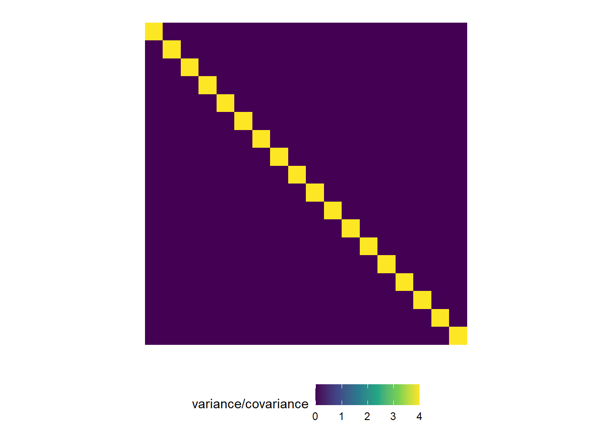
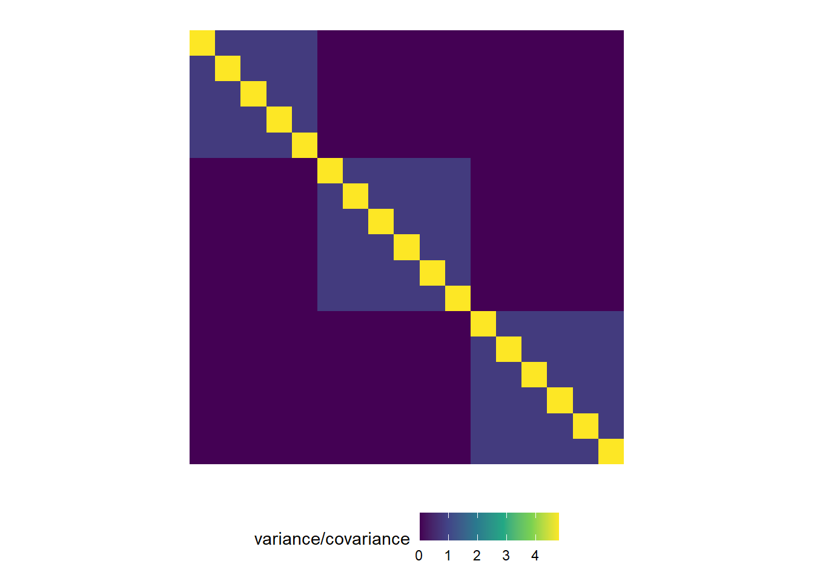
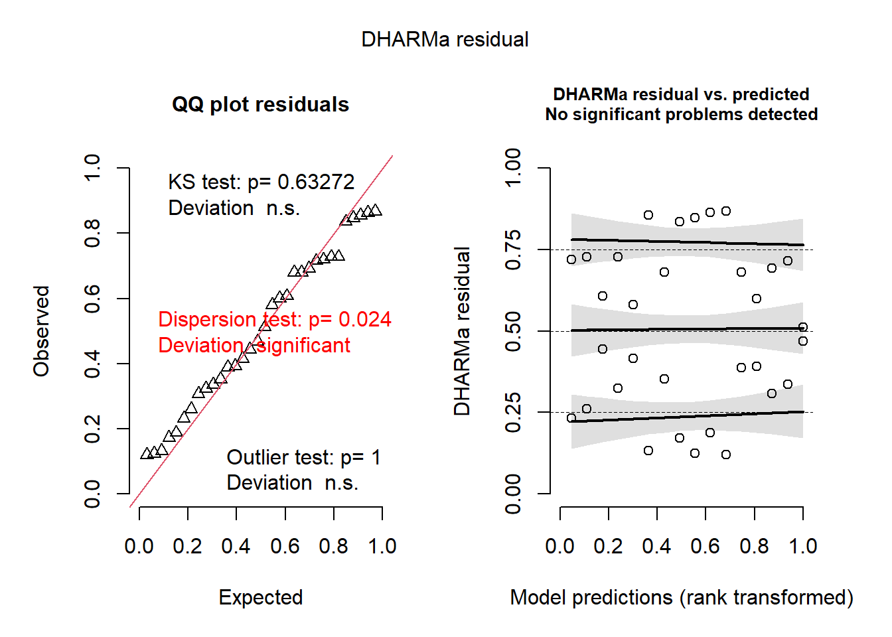

Day 2 Mixed models I
January 27th, 2026
2.1 Recall the most common statistical model
\[\mathbf{y} \sim N(\boldsymbol\mu, \boldsymbol\Sigma),\]
where:
- \(\mathbf{y} \equiv [y_1, y_2, \dots, y_n]'\) contains the response data,
- \(\boldsymbol{\mu} \equiv [\mu_1, \mu_2, \dots, \mu_n]'\) contains the expected values of said data,
- \(\boldsymbol\Sigma\) is the variance-covariance matrix.
The most typical model typically has:
- \(\boldsymbol\mu = \mathbf{X}\boldsymbol{\beta}\) and
- \(\boldsymbol\Sigma = \sigma^2\mathbf{I}\).
In summary, the assumptions are:
- Normality
- Independence
- Constant variance
2.2 Variations to that very common statistical model
We can adapt the assumptions one by one:
- Normality – assume a different distribution
- Independence – implement a hierarchical/multi-level/mixed model that models the data that were generated together.
- Constant variance – model the variance/assume a different distribution where the mean and the variance are not independent.
2.3 Relaxing the assumption of independence
- What if we can model the variance-covariance matrix with something else that’s not \(\sigma^2 \mathbf{I}\)?
library(tidyverse)
my_theme <-
theme_minimal()+
theme(aspect.ratio = 1,
axis.text = element_blank(),
legend.position = "bottom",
panel.grid = element_blank(),
axis.title = element_blank(),
axis.ticks = element_blank())
theme_set(my_theme)sigma <- 2
diag(sigma^2, nrow = 18) |>
as.data.frame() |>
rownames_to_column("x") |>
pivot_longer(cols = -c(x), names_to = "y") |>
mutate(y = str_replace(y, "V", "") |> as.numeric(),
x = as.numeric(x)) |>
ggplot(aes(x,-y))+
geom_tile(aes(fill = value))+
scale_fill_viridis_c()+
labs(fill = "variance/covariance")
m_cs <- lmer(diameter ~ time + (1|appleid),
data = agridat::byers.apple |> filter(appleid %in% c(1,4,32)))
Z <- getME(m_cs, "Z")
sigma2_s <- .8
G <- diag(c(rep(sigma2_s, 3)))
Z %*% G %*% t(Z) %>%
as.matrix() %>%
as.data.frame() %>%
rownames_to_column("x") %>%
pivot_longer(cols = -c(x), names_to = "y") %>%
mutate(x = as.numeric(x), y= as.numeric(y)) %>%
left_join(
diag(sigma^2, nrow = 18) %>%
as.data.frame() %>%
rownames_to_column("x") %>%
pivot_longer(cols = -c(x), names_to = "y") %>%
mutate(y = str_replace(y, "V", "") %>% as.numeric(),
x = as.numeric(x)) %>%
rename(s2 = value)) %>%
ggplot(aes(-x,y))+
geom_tile(aes(fill = value+s2))+
theme_minimal()+
scale_fill_viridis_c()+
labs(fill = "variance/covariance")+
theme(aspect.ratio = 1,
axis.text = element_blank(),
legend.position = "bottom",
panel.grid = element_blank(),
axis.title = element_blank(),
axis.ticks = element_blank())## Joining with `by = join_by(x, y)`
m_cs <- lmer(diameter ~ time + (1|tree/appleid),
data = agridat::byers.apple |> filter(appleid %in% c(1,4,32)))## boundary (singular) fit: see help('isSingular')Z <- getME(m_cs, "Z")
sigma2_s <- .8
sigma2_t <- 1.2
sigma <- 1.5
G <- diag(c(rep(sigma2_s, 3), rep(sigma2_t, 2)))
Z %*% G %*% t(Z) %>%
as.matrix() %>%
as.data.frame() %>%
rownames_to_column("x") %>%
pivot_longer(cols = -c(x), names_to = "y") %>%
mutate(x = as.numeric(x), y= as.numeric(y)) %>%
left_join(
diag(sigma^2, nrow = 18) %>%
as.data.frame() %>%
rownames_to_column("x") %>%
pivot_longer(cols = -c(x), names_to = "y") %>%
mutate(y = str_replace(y, "V", "") %>% as.numeric(),
x = as.numeric(x)) %>%
rename(s2 = value)) %>%
ggplot(aes(-x,y))+
geom_tile(aes(fill = value+s2))+
theme_minimal()+
scale_fill_viridis_c()+
labs(fill = "variance/covariance")+
theme(aspect.ratio = 1,
axis.text = element_blank(),
legend.position = "bottom",
panel.grid = element_blank(),
axis.title = element_blank(),
axis.ticks = element_blank())## Joining with `by = join_by(x, y)`
2.4 Applied examples
Three sets of data describe the relationship between treatment and crop yield. However, the structures in the data (i.e., data architecture) are different.
2.4.1 Example A – independence holds
dat_independent <- read.csv("../data/cochrancox_kfert.csv")
m_independent <- lm(yield ~ factor(K2O_lbac), data = dat_independent)
DHARMa::simulateResiduals(m_independent, plot=T)
## Object of Class DHARMa with simulated residuals based on 250 simulations with refit = FALSE . See ?DHARMa::simulateResiduals for help.
##
## Scaled residual values: 0.168 0.528 0.452 0.072 0.352 0.78 0.788 0.68 0.724 0.912 0.544 0.228 0.408 0.732 0.1362.4.2 Example B – simple groups of similar observations
library(lme4)
dat_blocked <- agridat::cochran.factorial
m_blocked <- lmer(yield ~ trt + (1|block), data = dat_blocked)
DHARMa::simulateResiduals(m_blocked, plot=T)
## Object of Class DHARMa with simulated residuals based on 250 simulations with refit = FALSE . See ?DHARMa::simulateResiduals for help.
##
## Scaled residual values: 0.728 0.692 0.848 0.26 0.72 0.388 0.868 0.352 0.392 0.58 0.172 0.336 0.188 0.512 0.444 0.856 0.728 0.124 0.324 0.232 ...2.5 Model checking and comparison
Important things to keep in mind:
- Statistical models to analyze data generated by designed experiments.
- Models created to explain vs. models created to predict.
2.6 Some useful metrics to compare models
- Root mean squared error \(RMSE = \sqrt{\frac{1}{n} \cdot \sum_{i=1}^n(\hat{y}_i-y_i)^2}\)
- In-sample versus out-of-sample RMSE
- R2
- Why is R2 a suboptimal metric?
- In-sample versus out-of-sample R2
- Why is R2 a suboptimal metric?
- Akaike information criterion (AIC)
- Bayesian information criterion (BIC)